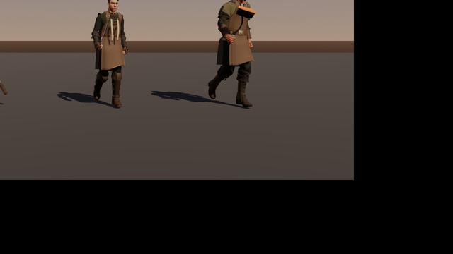
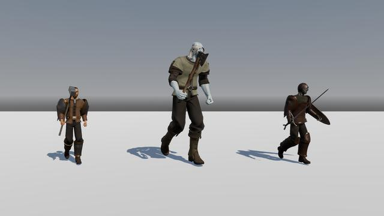

Life, hit and speed figures are multipliers on a normal monster of the same level. A monster takes its level from where it is met.
A blow shows where it lands. Every creature lights up round its outline for a moment in the blow's colour, and beasts and critters are knocked back and settle again, the spine bending away from the blow and the head snapping back; people flinch instead. A physical blow throws out what the body is made of, given under When struck: drops that land splash the ground and soak in, and a body that falls leaves a pool spreading under it. Weapons strike sparks only from stone, glass and crystal.
Young monsters are gentler. At level 1 a monster has 60% of the full life for its level and deals half the damage; its life reaches the full figure at level 24 and its damage at level 28. In the open world, packs up to level 4 are two or three monsters and never have a rare leader, at most a magic one. Up to level 20 they are two to four, with a rare leader in 3% of packs, and above that two to five, with a rare leader in 6%.
A monster lets go of anyone more than 70 metres away (you took a waypoint, rode off, or fell and stood up at a shrine) and goes home; a raid's bosses keep to their own room. A magic monster gives two and a half times the experience of a common one, a rare six times, and a boss twenty times, times its own worth of one to three. A monster going home plans its whole way back round rocks and walls and keeps to it; the rare one that still gets stuck is put back at home in a puff of dust (1.14.46). A Regenerating monster mends 0.6% of its life a second, and a monster that heals others (the Ashen Hymn) mends by a share of its own life, not of the one it heals; a group dungeon walked without a party, alone or with companions, has one pack to a room (1.14.52). A bow's or a wand's shot at a monster above you climbs to its mark, so a monster on a ledge can be shot from below (1.14.54). A pack holds at most two casters at any level, and the packs round the Emberwatch and Highwatch start about a level below the quests given there (about 18 by the Emberwatch, about 25 by Highwatch) and rise to the region's top far out (1.14.50).
A monster's blow grows with its level along the old curve to level 12 and more gently after it: from level 28 it is about half what it was, and a higher-level monster still always hits harder than a lower one. Its life eases from full at level 10 to three quarters of the old curve at level 22 and above. Companions, battleground bots and summoned minions keep the old curves. Burning, bleeding and poison from monsters run at half strength on heroes, and a bleed runs from 44% of the physical damage that landed, after armour. No blow from a monster that is not a boss (nor a raid's) takes more than 40% of a hero's maximum life.
Armour turns most of a small physical hit, so a fight's blows wear it down: each physical blow a hero, companion or minion lands on a monster takes 2.5% off its armour, to half, and the armour comes back 4 seconds after the last blow (Worn Armour ). A bow or a pair of blades keeps about three quarters of its damage on a heavily armoured boss. No monster resists physical damage any more; armour and evasion are its only defence against it (1.14.44).
Aberration Beast Construct Demon Elemental Giant Human Lattice Plant Undead
Aberration7 Family Aberration Fights as Caster Damage Physical Life ×1 Hits ×0.8 Speed ×1 Resists Cold 40% When struck Dark teal blood Abilities Brine Bolt, Frost Pulse Found in Saltreach Coast , The Drowned Grotto , The Drowned Basilica Family Aberration Fights as Melee Damage Cold Life ×0.6 Hits ×0.3 Speed ×0.6 Resists Cold 40% When struck Dark teal blood Feeds Crawls to the boss that called it and heals it if it gets there Family Aberration Fights as Caster Damage Lightning Life ×1.3 Hits ×1 Speed ×0.8 Resists Lightning 60%, Cold 20%, Fire -20% When struck Bright drops Abilities Stinging Bolt, Sting Pulse Found in The Undertow , Tide Bells , Greywatch Light Family Aberration Fights as Caster Damage Lightning Life ×9 Hits ×1.5 Speed ×0.8 Resists Lightning 60%, Cold 30%, Fire -10% When struck Bright drops Abilities Stinging Bolt, Sting Pulse, Lashing Threads Found in Tide Bells Family Aberration Fights as Melee Damage Lightning Life ×1.5 Hits ×0.8 Speed ×0.8 When struck Bright drops Abilities Sting Pulse Beast23 Family Beast Fights as Pack Damage Physical Life ×0.8 Hits ×0.9 Speed ×1.2 When struck Blood Found in Brightmeadow Vale Skinning Cured Leather or, from level 20, Thick Leather , 1–2 (how) Family Beast Fights as Pack Damage Physical Life ×0.5 Hits ×0.7 Speed ×1.3 Flies Yes When struck Yellow-green ichor Family Beast Fights as Pack Damage Physical Life ×0.6 Hits ×0.7 Speed ×1.4 When struck Blood Skinning Cured Leather or, from level 20, Thick Leather , 1–2 (how) Family Beast Fights as Pack Damage Lightning Life ×0.7 Hits ×1 Speed ×1.3 Flies Yes When struck Blood and a few feathers Found in Saltreach Coast Family Beast Fights as Pack Damage Cold Life ×1 Hits ×1 Speed ×1.3 Resists Cold 50% When struck Blood Found in Frostspire Peaks , Spire of the Sundered Crown Skinning Cured Leather or, from level 20, Thick Leather , 1–2; Rimefur Pelt (35%) (how) Family Beast Fights as Pack Damage Cold Life ×1 Hits ×1 Speed ×1 Flies Yes When struck Blood and a few feathers Found in Frostspire Peaks Family Beast Fights as Caster Damage Chaos Life ×0.8 Hits ×0.9 Speed ×1.1 Resists Chaos 30% Flies Yes When struck Yellow-green ichor Abilities Spore Burst Found in The Moth-Eaten Loom , The Heartroot Family Beast Fights as Pack Damage Physical Life ×0.9 Hits ×0.8 Speed ×1.1 Resists Cold 25% When struck Pale ichor and chips of shell Found in The Broken Shoals Family Beast Fights as Pack Damage Cold Life ×0.5 Hits ×0.7 Speed ×1.4 Resists Cold 40%, Fire -20% When struck Glints of glass, and sparks from weapons Found in Warp Tears Family Beast Fights as Caster Damage Cold Life ×9 Hits ×1.6 Speed ×1 Resists Cold 60%, Fire -10% When struck Glints of glass, and sparks from weapons Abilities Rime Bolt, Frost Pulse Found in Warp Tears Family Beast Fights as Melee Damage Cold Life ×1.4 Hits ×0.8 Speed ×1.1 Resists Cold 40% When struck Blood Abilities Gore Charge Family Beast Fights as Melee Damage Chaos Life ×1.1 Hits ×0.8 Speed ×0.9 When struck Yellow-green ichor Abilities Spore Burst Family Beast Fights as Melee Damage Physical Life ×1.2 Hits ×0.8 Speed ×1 When struck Blood Abilities Gore Charge Construct6 Family Construct Fights as Totem Damage Physical Life ×0.6 Hits ×1 Speed ×0 Family Construct Fights as Melee Damage Physical Life ×1.3 Hits ×1.1 Speed ×0.8 Resists Cold 25%, Fire -30%, Lightning 15% When struck Blood Abilities Pinned Found in The Winding House , The Lych Field Family Construct Fights as Pack Damage Physical Life ×0.7 Hits ×0.8 Speed ×1.2 Resists Cold 25%, Fire -30%, Lightning 15% When struck Blood Abilities Running Stitch Found in The Tailor's Hall , The Cloth Hall 
Demon1 Family Demon Fights as Ranged Damage Physical Life ×0.7 Hits ×1 Speed ×1.2 Resists Fire 60% When struck Dark blood and embers Abilities Cinder Bolt Found in Cinderreach Wastes Elemental6 Family Elemental Fights as Brute Damage Fire Life ×2 Hits ×1.3 Speed ×0.8 Resists Fire 75% When struck Glowing drops and embers Abilities Magma Pulse Found in Cinderreach Wastes , The Cinder Forge Family Elemental Fights as Melee Damage Fire Life ×0.5 Hits ×0.3 Speed ×0.6 Resists Fire 50% When struck Glints of crystal, and sparks from weapons Feeds Crawls to the boss that called it and heals it if it gets there Family Elemental Fights as Pack Damage Fire Life ×0.8 Hits ×0.8 Speed ×1 Resists Fire 75% When struck Glowing drops and embers Found in The Cinder Crater Family Elemental Fights as Melee Damage Cold Life ×1.3 Hits ×1.1 Speed ×0.8 Resists Cold 50%, Lightning 20%, Fire -35% When struck Pale frost and a puff of powder snow Abilities Smother Found in The Frozen Spinnery , The Spindle's Foot Family Elemental Fights as Pack Damage Cold Life ×0.5 Hits ×0.6 Speed ×1.2 Resists Cold 50%, Lightning 20%, Fire -35% When struck Pale frost and a puff of powder snow Found in The Frozen Spinnery , The Spindle's Foot , Spire of the Sundered Crown Family Elemental Fights as Brute Damage Fire Life ×1.5 Hits ×0.8 Speed ×0.8 Resists Fire 30% When struck Glowing drops and embers Abilities Magma Pulse Giant4 Family Giant Fights as Brute Damage Physical Life ×2.6 Hits ×1.6 Speed ×0.8 Resists Cold 50% When struck Blood Abilities Earthshatter, Frost Pulse Found in Frostspire Peaks Skinning Cured Leather or, from level 20, Thick Leather , 1–3; Rimefur Pelt (50%) (how) Family Giant Fights as Brute Damage Physical Life ×2 Hits ×0.8 Speed ×0.8 Resists Cold 50% When struck Blood Abilities Earthshatter, Frost Pulse Skinning Cured Leather or, from level 20, Thick Leather , 1–2; Rimefur Pelt every time (how) 
Family Giant Fights as Brute Damage Physical Life ×2 Hits ×0.8 Speed ×0.8 When struck Blood Abilities Earthshatter Skinning Cured Leather or, from level 20, Thick Leather , 1–4 (how) Human34 Family Human Fights as Melee Damage Physical Life ×1 Hits ×1.1 Speed ×1 When struck Blood Found in Brightmeadow Vale , Saltreach Coast Family Human Fights as Melee Damage Physical Life ×1.2 Hits ×1.1 Speed ×1 When struck Blood Family Human Fights as Caster Damage Physical Life ×1 Hits ×1 Speed ×1 Resists Fire 30% When struck Blood Abilities Cinder Bolt, Ashen Hymn Found in Cinderreach Wastes , The Cinder Forge , Spire of the Sundered Crown Family Human Fights as Melee Damage Fire Life ×0.6 Hits ×0.3 Speed ×0.6 Resists Fire 40% When struck Blood Feeds Crawls to the boss that called it and heals it if it gets there Family Human Fights as Melee Damage Fire Life ×1.1 Hits ×1.1 Speed ×1.1 Resists Fire 30% When struck Blood Found in The Vault of the Last Lantern , The Glass Scar Family Human Fights as Caster Damage Fire Life ×1 Hits ×1 Speed ×1 Resists Fire 40% When struck Blood Abilities Cinder Bolt, Magma Pulse Found in The Vault of the Last Lantern , The Glass Scar Family Human Fights as Melee Damage Physical Life ×1.1 Hits ×1.1 Speed ×1.1 Resists Chaos 25% When struck Blood Found in The Moth-Eaten Loom , The Heartroot Family Human Fights as Caster Damage Chaos Life ×1 Hits ×1 Speed ×1 Resists Chaos 40% When struck Blood Abilities Shade Bolt, Ashen Hymn Found in The Moth-Eaten Loom , The Heartroot Family Human Fights as Melee Damage Physical Life ×1.1 Hits ×1 Speed ×1.1 Resists Cold 60%, Lightning 10%, Fire -20% When struck Blood Found in The Underweave , The Drowned Boat Family Human Fights as Caster Damage Cold Life ×1.2 Hits ×0.8 Speed ×0.9 Resists Cold 60%, Lightning 10%, Fire -20% When struck Blood Abilities Cold Thread, Backstitch Pulse Found in The Underweave , The Drowned Boat Family Human Fights as Caster Damage Cold Life ×1.2 Hits ×0.8 Speed ×0.9 Resists Cold 60%, Lightning 10%, Fire -20% When struck Blood Abilities Cold Thread, Turning Found in The Looking Side , The Looking Arch Family Human Fights as Pack Damage Physical Life ×0.5 Hits ×0.5 Speed ×1.1 Resists Cold 60%, Lightning 10%, Fire -20% When struck Blood Family Human Fights as Melee Damage Physical Life ×1.3 Hits ×1.1 Speed ×1 Resists Cold 40%, Lightning 30%, Fire -30% When struck Pale motes of loose thread Abilities Shield Beat Found in The Far Side , The Lattice Gate Family Human Fights as Caster Damage Lightning Life ×1.2 Hits ×1 Speed ×0.9 Resists Cold 40%, Lightning 30%, Fire -30% When struck Pale motes of loose thread Abilities Far Thread, Taken Up Found in The Far Side , The Lattice Gate Family Human Fights as Melee Damage Physical Life ×1.2 Hits ×1.1 Speed ×1 Resists Cold 50%, Lightning 20%, Fire -35% When struck Pale frost and a puff of powder snow Abilities Carding Comb Found in The Frozen Spinnery , Spire of the Sundered Crown Family Human Fights as Caster Damage Cold Life ×1.1 Hits ×1 Speed ×0.9 Resists Cold 50%, Lightning 20%, Fire -35% When struck Pale frost and a puff of powder snow Abilities Spun Frost, Wound Up Found in The Frozen Spinnery , Spire of the Sundered Crown Family Human Fights as Melee Damage Physical Life ×1.2 Hits ×1.1 Speed ×1.1 Resists Cold 30%, Fire -20%, Lightning -15% When struck Blood Abilities Crop Found in The Cutting House , The Tenter Ground Family Human Fights as Caster Damage Physical Life ×1.1 Hits ×1 Speed ×0.9 Resists Cold 30%, Fire -20%, Lightning -15% When struck Blood Abilities Tenterhook, Stretched Found in The Cutting House , The Tenter Ground Family Human Fights as Melee Damage Physical Life ×1.2 Hits ×1.1 Speed ×1.1 Resists Cold 30%, Fire -15%, Lightning 10% When struck Blood Abilities Close the Eyes Found in The Winding House , The Lych Field Family Human Fights as Caster Damage Physical Life ×1.1 Hits ×1 Speed ×0.9 Resists Cold 30%, Fire -15%, Lightning 10% When struck Blood Abilities Pin, Pin Down Found in The Winding House , The Lych Field Family Human Fights as Melee Damage Fire Life ×1.4 Hits ×1.1 Speed ×0.9 Resists Cold 30%, Fire 10%, Lightning -15% When struck Blood Abilities Press Found in The Tailor's Hall , The Cutting Yard Family Human Fights as Melee Damage Fire Life ×1.1 Hits ×0.8 Speed ×0.9 Resists Fire 40% When struck Blood Abilities Magma Pulse Family Human Fights as Melee Damage Physical Life ×1.2 Hits ×0.8 Speed ×1.1 When struck Blood Abilities Gore Charge Family Human Fights as Melee Damage Physical Life ×1.3 Hits ×0.8 Speed ×1.1 When struck Blood Abilities Gore Charge Family Human Fights as Melee Damage Fire Life ×1.1 Hits ×0.8 Speed ×1 When struck Blood Abilities Magma Pulse Family Human Fights as Melee Damage Fire Life ×1.2 Hits ×0.8 Speed ×1 When struck Blood Abilities Magma Pulse Family Human Fights as Melee Damage Physical Life ×1.4 Hits ×0.8 Speed ×1 When struck Blood Abilities Gore Charge Family Human Fights as Melee Damage Physical Life ×1.2 Hits ×0.8 Speed ×1 When struck Blood Abilities Gore Charge Family Human Fights as Melee Damage Physical Life ×1.4 Hits ×0.8 Speed ×1 When struck Pale motes of loose thread Abilities Shield Beat Family Human Fights as Melee Damage Physical Life ×1.3 Hits ×0.8 Speed ×1 When struck Pale frost and a puff of powder snow Abilities Carding Comb Family Human Fights as Melee Damage Physical Life ×1.3 Hits ×0.8 Speed ×1 When struck Blood Abilities Crop Family Human Fights as Melee Damage Physical Life ×1.4 Hits ×0.8 Speed ×1 When struck Blood Abilities Earthshatter Lattice9 Family Lattice Fights as Pack Damage Physical Life ×0.5 Hits ×0.6 Speed ×1.2 Resists Cold 40%, Fire -20% When struck Pale motes of loose thread Found in The Selvage , Loose Threads , The Glass Skiff , The Lattice Gate Family Lattice Fights as Caster Damage Cold Life ×1.2 Hits ×0.8 Speed ×0.9 Resists Cold 60%, Lightning 20%, Fire -25% When struck Pale motes of loose thread Abilities Cold Thread, Unpicking Found in The Selvage , Loose Threads , The Glass Skiff , The Lattice Gate Family Lattice Fights as Melee Damage Physical Life ×10 Hits ×1.6 Speed ×0.8 Resists Cold 40%, Lightning 30%, Fire -15% When struck Pale motes of loose thread Abilities Lashing Ends, Cast Off, Frayed Ground Found in Loose Threads Family Lattice Fights as Melee Damage Physical Life ×1.1 Hits ×1.2 Speed ×1.1 Resists Cold 50%, Lightning -15%, Fire 10% Flies Yes When struck Blood Found in The Underweave , The Drowned Boat Family Lattice Fights as Pack Damage Physical Life ×0.4 Hits ×0.6 Speed ×1.3 Resists Cold 40%, Lightning -15% Flies Yes When struck Blood Found in The Underweave , The Drowned Boat Family Lattice Fights as Melee Damage Physical Life ×1.2 Hits ×1.1 Speed ×0.9 Resists Cold 40%, Lightning 30%, Fire -30% When struck Pale motes of loose thread Abilities Snag Found in The Far Side , The Drawing Family Lattice Fights as Melee Damage Chaos Life ×1.1 Hits ×0.8 Speed ×0.9 When struck Blood Abilities Gore Charge Plant3 Family Plant Fights as Caster Damage Physical Life ×0.8 Hits ×1 Speed ×1 Resists Chaos 30% When struck Glowing spores Abilities Spore Burst Family Plant Fights as Melee Damage Physical Life ×1 Hits ×1 Speed ×1 Resists Cold 20% When struck Amber sap and bark Found in Thornwood , Rootdeep Warrens Family Plant Fights as Pack Damage Physical Life ×0.8 Hits ×0.8 Speed ×1.1 Resists Chaos 30% When struck Amber sap and bark Found in The Antlered Glade Undead19 Family Undead Fights as Melee Damage Physical Life ×0.9 Hits ×1 Speed ×1 Resists Chaos 20% When struck Grave dust Found in Brightmeadow Vale , The Hollow Crypt Family Undead Fights as Ranged Damage Physical Life ×0.8 Hits ×1 Speed ×1 When struck Grave dust Abilities Bone Arrow Found in Brightmeadow Vale , The Hollow Crypt , Trial of the Lattice Family Undead Fights as Sturdy Damage Physical Life ×1.5 Hits ×1.1 Speed ×1 When struck Grave dust Found in Thornwood , Spire of the Sundered Crown , Trial of the Lattice , The Vault of the Last Lantern Family Undead Fights as Caster Damage Physical Life ×1 Hits ×0.8 Speed ×1 Resists Chaos 40% Flies Yes When struck Cold light Abilities Shade Bolt Found in Thornwood , Rootdeep Warrens , Trial of the Lattice Family Undead Fights as Melee Damage Cold Life ×1 Hits ×1 Speed ×1 When struck Grave dust Found in Saltreach Coast , The Drowned Grotto , The Drowned Basilica Family Undead Fights as Caster Damage Physical Life ×1 Hits ×1 Speed ×1 Resists Fire 40% When struck Grave dust Abilities Cinder Bolt, Falling Cinder Found in Cinderreach Wastes , The Cinder Forge Family Undead Fights as Assassin Damage Physical Life ×0.9 Hits ×1.3 Speed ×1.2 When struck Grave dust Found in Frostspire Peaks , Spire of the Sundered Crown Family Undead Fights as Caster Damage Physical Life ×1 Hits ×1 Speed ×1 Resists Cold 75% Flies Yes When struck Cold light Abilities Rime Bolt Found in Frostspire Peaks , Spire of the Sundered Crown Family Undead Fights as Melee Damage Physical Life ×1 Hits ×1 Speed ×1 When struck Grave dust Family Undead Fights as Caster Damage Physical Life ×1 Hits ×1 Speed ×1 When struck Grave dust Abilities Shade Bolt Family Undead Fights as Caster Damage Cold Life ×1.1 Hits ×1 Speed ×1 Resists Cold 50% When struck Grave dust Abilities Rime Bolt, Ashen Hymn Found in The Drowned Basilica Family Undead Fights as Melee Damage Physical Life ×0.6 Hits ×0.3 Speed ×0.6 When struck Grave dust Feeds Crawls to the boss that called it and heals it if it gets there Family Undead Fights as Caster Damage Chaos Life ×1 Hits ×0.8 Speed ×1 Resists Chaos 40%, Cold 20% Flies Yes When struck Cold light Abilities Shade Bolt Found in The Vault of the Last Lantern , Shrine of the Quiet Frost Family Undead Fights as Melee Damage Physical Life ×1.6 Hits ×1 Speed ×1 Resists Cold 30%, Chaos 20% When struck Grave dust Family Undead Fights as Melee Damage Physical Life ×1.3 Hits ×0.8 Speed ×0.9 Resists Chaos 20% When struck Grave dust Family Undead Fights as Melee Damage Cold Life ×1.4 Hits ×0.8 Speed ×0.9 When struck Grave dust Abilities Frost Pulse Family Undead Fights as Melee Damage Fire Life ×1.2 Hits ×0.8 Speed ×0.9 When struck Grave dust Abilities Magma Pulse Family Undead Fights as Melee Damage Cold Life ×1.6 Hits ×0.8 Speed ×0.9 Resists Cold 40% When struck Grave dust Abilities Frost Pulse Family Undead Fights as Melee Damage Physical Life ×1.4 Hits ×0.8 Speed ×0.9 When struck Grave dust Abilities Earthshatter